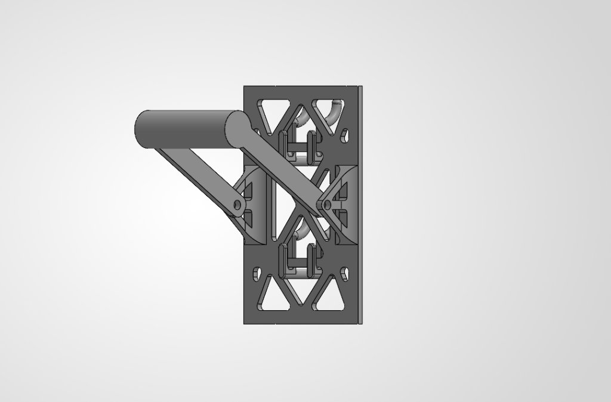
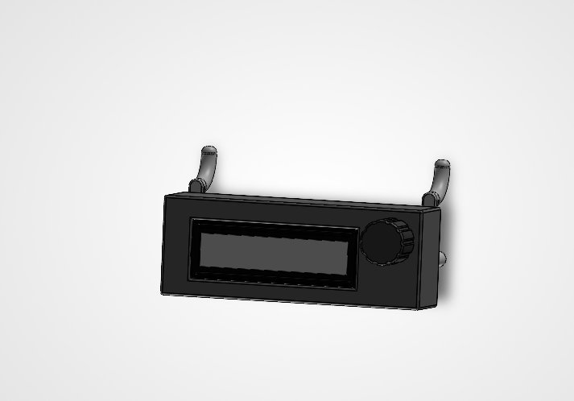
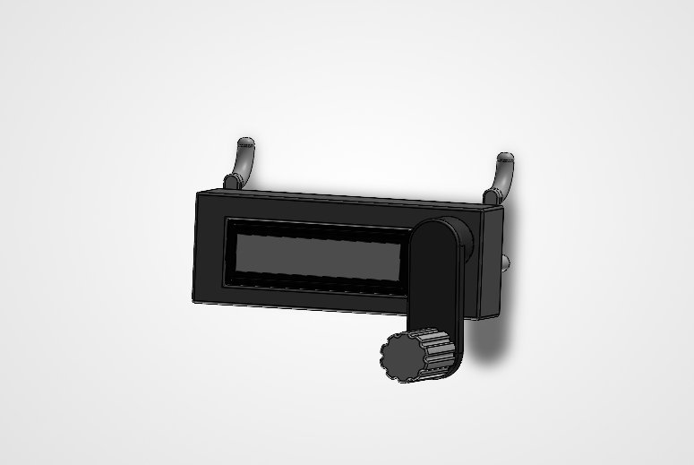

Modular pegboard test rig for UGRT's robotic arm, combining custom lever, dial, and crank modules with custom embedded firmware that challenges operators to hit randomized potentiometer targets on an LCD.
Each module mounts directly to a standard pegboard so operators can rearrange tasks and train specific gripper and wrist movements. Click any render to zoom.

Pegboard-mounted hinged lever designed to test wrist articulation, smooth arc tracking, and consistent grip force.

Knurled potentiometer knob paired with an LCD screen to test fine pinch-gripping and controlled wrist rotation.

Hybrid lever-and-knob crank with live LCD target feedback for more dynamic, multi-axis arm dexterity practice.
Built from scratch for the rotary and crank modules: the LCD displays a target potentiometer position, and once the operator rotates the dial to that exact setpoint with the rover's gripper, the system automatically generates a new target position, making it an easy, repeatable drill for practicing arm control.
All renders above are CAD prototypes. Assembled hardware photos and rover arm demo videos are on the way.